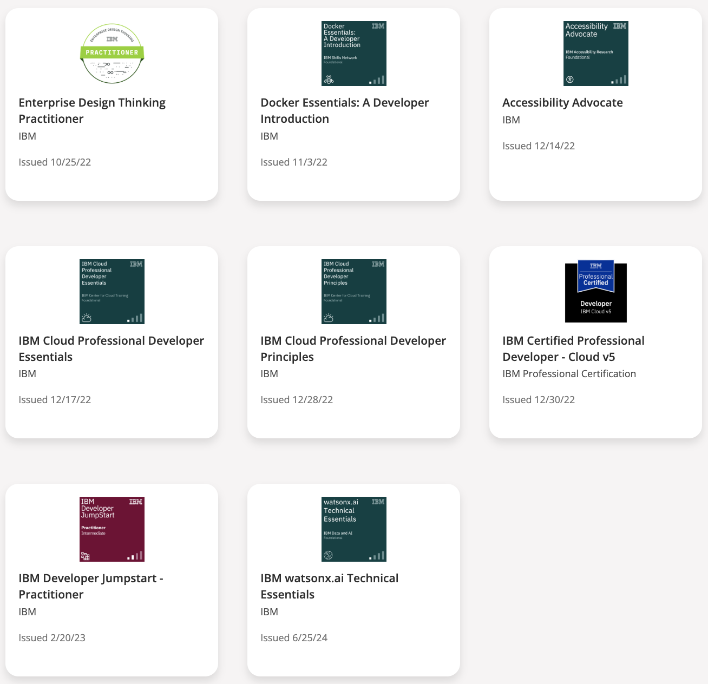

Mark Fry
markbfryme@gmail.com · www.linkedin.com/in/mark-fry-eng-atx
Experienced Software Developer | Aerospace Engineer
As a software developer with a distinctive background in engineering rockets and airplanes, I offer a unique blend
of skills and experiences. I have a proven track record of precision, innovation, and attention to detail and I'm
committed to applying my expertise to create elegant solutions for complex business challenges. Eager to further
enhance my software development skills, I am on the lookout for fresh opportunities to collaborate and excel.
Experience
Backend Developer IBM Cloud, July 2022 - Present
- Implementation of new features and bug fixes for IBM Cloud Infrastructure Provisioning Squad,
committing code to production codebase for IBM Cloud
- Primarily supporting Go/golang apps
- Utilize python for scripting and data visualization
- Support of the full lifecycle of cloud software development, design, implementation, code review,
continuous integration, continuous delivery, and customer support
- REST API development
MeasuringWorth.com (Freelance Work) July 2022 - January 2023
- Worked with project stakeholders to design and implement new web pages for an existing site
using HTML, PHP, JavaScript, and CSS
- dollarvaluetoday page
- result page
Firefly Aerospace, Inc. - June 2017 - June 2022
- Lead Structural Analyst, Structural Analysis Subject Matter Expert - February 2020 - June 2022
- Developed in house software add-on for the structural analysis of composite overwrapped
pressure vessels using python. Previously dependent on contractor and external software
(25k/yr./license). Validated software predictions against hardware test data. Trained engineers in
using software to produce new hardware designs.
- Lead and mentored a team of structural analysis engineers to analyze structures hardware and
release analysis packages.
- Developed in house classical lamination theory (CLT) calculator using python.
- Developed structural test data analysis software using python, pandas, and plotly.
- Performed structural analysis or reviewed structural analysis of hundreds of metallic and carbon
fiber rocket and spacecraft structures.
- Analysis Manager - June 2018 - February 2020
- Managed a team of interdisciplinary analysis engineers including aerodynamics, loads and
dynamic environments, structural analysis, fluid analysis, thermal analysis, and propulsion analysis.
- Utilized agile methodologies with JIRA to manage scrum-based workflow for task management.
- Developed the Firefly analysis documentation and release process and system.
- Structural Analyst - June 2017 - June 2018
- Used external software and developed in house analysis tools in support of propulsion and
structures teams performing hand analysis and finite element analysis to assess the structural
integrity of primary and secondary structure and propulsion hardware.
- Structural analysis of carbon fiber propellant tanks and rocket engines.
The Boeing Company - January 2012 - May 2017
- Structural Analysis Engineer - November 2014 - May 2017
- Support of the NASA Commercial Crew Transportation program through analysis of primary
and secondary structure by classic hand calculation and finite element analysis using FEMAP
and NASTRAN for linear static analysis and first modes analysis.
- Documentation and integration of structural analysis for design and manufacturing.
- Interfacing with load engineers, thermal engineers, and design engineers to establish product
environment and design for structural integrity.
- Structural Analysis Engineer - August 2013 - November 2014
- Performed structural analysis of primary structure bolt patterns using hand calculation and
analysis templates for 1,000s of fasteners on the Space Launch System Rocket Intertank
Structure.
- Automated the re-run of analysis using Microsoft VBA integrated into the fastener analysis tool.
- Automated the documentation process required for NASA certification.
- Performed structural analysis of Space Launch System secondary structure using classic hand
calculation and finite element analysis using PATRAN/NASTRAN, and ABAQUS.
- Performed analysis of primary and secondary structure for the KC-46A Tanker program using hand
calculation and Boeing analysis tools.
- Design Engineer - January 2012 - August 2013
- Investigation and implementation of engineering changes on the 747-8 Commercial Airplane.
- Management of cost improvement projects on the 747-8.
Skills
Softare Development
- Go
- Python
- git
- Github
- CSS
- Javascript
- CSS
- PHP
- CI/CD
- DevOps
Aerospace Engineering
- Structural Analysis
- Finite Element Analysis
- Composite Analysis
- COPV Analysis
- Analysis Tool Development
- Nastran/Patran
- Ansys Workbench
- Simcenter
- Teamcenter
- Classical Hand Calculation
Education
M.S. Mechanical Engineering, Louisiana State University - May 2012
GPA: 3.875, Thesis: Zero-Dimensional Modeling of Laser-Driven Micro-Fliers on Thin Stationary Layered
Targets
- Developed software in FORTRAN for the prediction of laser driven flyer impact/penetration over
large parametric spaces
- Implemented Uncertainty Analysis, Monte-Carlo Analysis, Shock Dynamics, Structural Analysis,
Dynamic Systems, and Ordinary Differential Equation Solvers, using FORTRAN in a Linux
environment
B.S. Mechanical Engineering, Magna Cum Laude, Louisiana State University - May 2010
GPA: 3.875 (Highest in graduating class), Ben Burns Award for Best Senior Design Project
Certifications
- IBM Certified Professional Developer - Cloud v5
- HTML, CSS, and Javascript for Web Developers
Johns Hopkins University (Coursera)
- Fundamentals of Engineering (FE)
